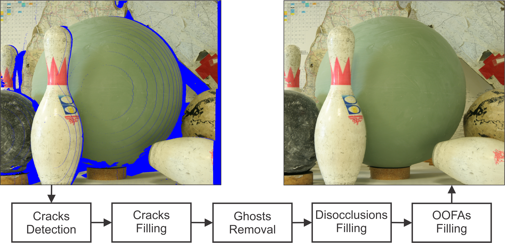
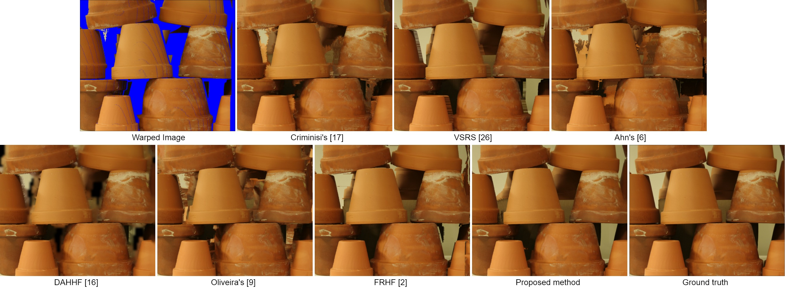

News! The images used in the experimental results are available for download. See at the bottom of the page (Downloads section).
An Artifact-type Aware DIBR Method for View Synthesis
IEEE Signal Processing Letters
Presented at The 2019 ICASSP | DOI: 10.1109/LSP.2018.2870342
Institute of Informatics (INF) - Federal University of Rio Grande do Sul (UFRGS)

Abstract
Depth-image-based rendering is a popular way to produce content for 3D Television and Free Viewpoint Video, allowing the synthesis of numerous viewpoints using a single reference view and its depth map. Due to the synthesis process and nature of the input, artifacts and holes appear, and solving these problems becomes a challenge. In this paper, we propose solutions to remove those artifacts and apply different filling strategies depending on the nature of each hole. Cracks are identified and filled using very local neighborhood information. Regions classified as ghosts are projected to their correct place. The remaining holes are classified as disocclusions or out-of-field areas, and filled with an appropriate adaptation of a popular inpainting method. In both adaptations, patch matching explores the spatial locality concept, using dynamically adaptive patch sizes from the reference image. For disocclusions we propose a filling order using depth and background terms, and a searching process which considers only background patches. We show that our method outperforms several view synthesis methods in the quantitative evaluation, besides presenting consistent visual results for both large baselines and severely occluded scenes.
Video Demonstration
Visual Comparison

{kind=link}
Fig. 1: Flowerpots (view 1 to 2) from Middlebury stereo datasets.
{kind=link}
{kind=link}
{kind=link}
{kind=link}
{kind=link}
{kind=link}
{kind=link}
{kind=link}
{kind=link}
Bibitex
@article{Oliveira2018SPL,
author = {Adriano Q. de Oliveira and Marcelo Walter and Cl{\'a}udio R. Jung},
title = {An Artifact-type Aware DIBR Method for View Synthesis},
journal = {IEEE Signal Processing Letters},
volume = {25},
number = {11},
year = {2018},
pages = {1705--1709},
ISSN = {1070-9908},
month = {Nov}
}
Downloads
Full paper
Source Code
(send an email to the first author)
Middlebury Results
Poznan Results
Microsoft Results
Results for [9]
Acknowledgements

Authors would like to thank CNPq and CAPES for their financial support.